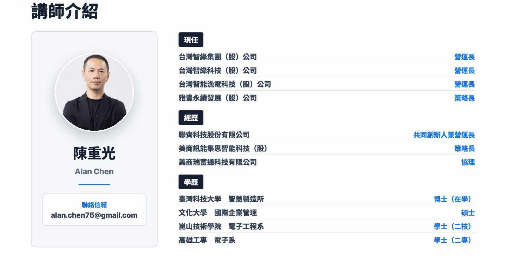
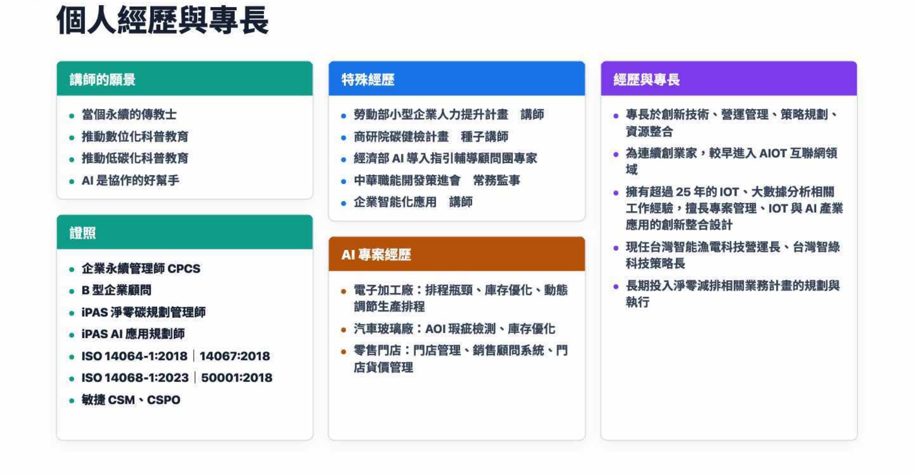

AI 的大腦 — Claude、GPT、Gemini
Vibe Coding 完整學習路徑 / 個人版開場
從 AI 對話
到可交付作品
教的是判斷力，不是工具操作 — 沿著素養 → 用 → 串 → 造
把對話一路升級成能跑的系統
不是學會聊天，是學會把對話變成成品
Stage 0–3 完整路徑｜16 模組｜素養 → 用 → 串 → 造｜陳重光
M0 開場開場
001

M0 開場開場
002

M0 開場開場
003
核心判斷
大家用的是 AI 的聊天視窗
但真正拉開差距的，是把對話變成可交付、可累積的工作流
這套路徑要帶你跨越的，就是從聊天到工作的那一跳
M0 開場開場
004
今天開場的六個段落：你在第一段
1開場你在這
從聊天到工作的那一跨越
核心判斷
2破題
AI 的七層架構
Vibe Coding 座標
蓋出來長這樣
24H 它自己跑
3教判斷
不教操作，教判斷
四個判斷節點
聊天型 vs 工作型
三個判斷缺口
4核心方法
先做再懂
先痛再教（六輪）
卡點分類
三條學習心態
5學習路徑
四階段全景
Stage 0 素養
Stage 1 用工具
Stage 2 串工具
Stage 3 造工具
6跑起來
一條資料流成品
三大平台
帶走成品
開場走完，你會知道這套課教什麼、怎麼學、會走到哪
破題 1 / 4破題：AI 不只是聊天視窗
005
你以為的 AI 只是這一層
L1
基礎模型
L2
協議層
溝通標準 — AI 跟外部工具怎麼對話
L3
編排框架
Sub-agent 編排 — 拆任務、分派子 Agent、決定執行順序
L4
技能模組
AI 會的技能 — 寫報告、查資料、做簡報
L5
Agent 身份
AI 的角色設定 — 你是誰、負責什麼、怎麼做事
L6
工作平台
整合 L1–L5 的開發環境 — Claude Code、Cursor
L7
應用產品
解決具體問題的 AI 產品 — Hermes、知識庫助手
多數人停在聊天視窗那一層 — 這條路徑帶你往上爬
破題 2 / 4破題：AI 不只是聊天視窗
006
Vibe Coding 不是憑感覺，是有座標的

起點軸（TDD / SDD / 無）× 執行軸（Manual / Vibe / Agentic）× 基礎設施軸（Prompt / Harness）
先在執行軸的 Vibe 立場打地基
先在執行軸的 Vibe 立場打地基
破題 3 / 4破題：AI 不只是聊天視窗
007
老師用 Vibe Coding 蓋的東西長這樣

三套個人知識系統，不是工程師寫的，是一輪一輪累積的
章魚重 Production / 烏龜重 Storage / 龍蝦重 Retrieval
章魚重 Production / 烏龜重 Storage / 龍蝦重 Retrieval
破題 4 / 4破題：AI 不只是聊天視窗
008
白天我用它，晚上它自己跑

09:00 讀昨日反思 → 12:00 寫筆記 append → 15:00 查舊筆記 → 21:00 睡覺它還在跑
起點，是這條路徑帶你建立的能力
起點，是這條路徑帶你建立的能力
教判斷 1 / 4這套課不一樣：教判斷，不教操作
009
別的 AI 課教你按哪個鈕，這套課教你怎麼判斷
教工具操作
背特定話術、prompt 咒語
記某個工具的介面按鈕
跟著固定 SOP 點一遍
工具改版、話術失效 → 歸零重學
vs
教判斷力
需求怎麼拆成 AI 能執行的結構
產出能不能用、好不好
卡住怎麼描述、怎麼修、怎麼選工具
換任何工具、任何介面 → 都還適用
工具會迭代、介面會改版、話術會失效 — 判斷力不會。這是整套課的設計核心
教判斷 2 / 4這套課不一樣：教判斷，不教操作
010
判斷力長什麼樣：四個判斷節點
1需求判斷
把要做的事拆清楚
→
2產出判斷
這版能不能用
→
3驗證判斷
用什麼標準檢查
→
4修正判斷
卡住怎麼描述、迭代
這四個判斷不綁任何工具 — 換 ChatGPT、Claude、Gemini 都是同一套判斷
教判斷 3 / 4這套課不一樣：教判斷，不教操作
011
聊天型使用與工作型使用
聊天型使用
單次提問 → 單次回答
結果停在參考資料
沒有驗證、沒有下一步
問完就結束，留不下東西
vs
工作型使用
先定義需求
設定格式與限制
用可檢查的標準修正產出
做出能交付、能重用的成品
判斷力，就是把每次使用從「聊天型」拉到「工作型」
教判斷 4 / 4這套課不一樣：教判斷，不教操作
012
學過 AI 卻用不上：通常卡在這三個判斷缺口
需求結構化
會用自然語言聊，但無法把需求拆成可被 AI 執行的結構
缺口：說得出，拆不出
產出判斷
看得到 AI 給的結果，但缺乏判斷它能不能用的標準
缺口：看得到，判不準
迭代修正
不滿意產出時，除了重問一次，沒有其他處理方式
缺口：改不動，只能重來
這三個缺口都不是工具問題，是判斷問題 — 整條路徑依序把它們補起來
核心方法 1 / 4學習的核心方法：判斷力怎麼長出來
013
核心方法一：先做再懂
HANDS-FIRST
先做出能分享的東西再回頭理解原理
反對「理論先行 / 學完才能做」— 不從基礎語法講起
老師 25 年教學發現
非工程師最大的障礙不是技術，是動手意願
第一個動作就動手
M1-1 五分鐘做出一個能傳給朋友看的網頁，先解鎖「我也能做」
反例
先寫一份「先學 HTML 基礎」的引導 → 八成學員當場放棄
你會先嘗到「我也能做」的體感，才回頭學為什麼這樣做
核心方法 2 / 4學習的核心方法：判斷力怎麼長出來
014
核心方法二：先痛再教（六輪循環）
BASELINE-FIRST
先讓你用自己的方式撞牆看見差距，才給方法
你是因為先痛過、看見缺口，才學得進去 — 不是被灌
第一輪 R1
用你原本的方式做一次 → 看見自己現在的能力水位
第二輪起 R2–R6
一輪一輪引入方法、立刻驗證，每輪都從操作到驗證跑完整
為什麼有效
先有缺口的體感，方法才裝得進去；學的是面對新工具的流程
六輪不是六個技巧，是六次「撞牆 → 看差距 → 補方法 → 驗證」
核心方法 2 / 4學習的核心方法：判斷力怎麼長出來
015
六輪怎麼跑：以 M1-1 為例
| 輪 | 這一輪做什麼（先撞牆） | 補上的判斷力 |
|---|---|---|
| R1 | 用原本的方式請 AI 做網頁 | 看見目前的能力水位 |
| R2 | 引入指令四要素，重做一次 | 需求結構化 |
| R3 | 加入介面判斷五項 | 產出判斷 |
| R4 | 跨平台比較與邊界辨識 | 工具選擇 |
| R5 | 挑戰互動產品 | 需求描述顆粒度 |
| R6 | 回顧與多維評估 | 迭代修正 |
3 小時走完六輪 = 把四個判斷節點，一個一個在你手上長出來
核心方法 3 / 4學習的核心方法：判斷力怎麼長出來
016
卡住了怎麼辦：四類卡點，四種判斷
需求不清
AI 產出方向錯誤
→ 回到指令四要素，檢查角色 / 任務 / 格式 / 限制
輸出不符
AI 理解了但格式錯
→ 補充輸出範例或限制條件
功能失效
產出有錯誤訊息或不能運作
→ 描述具體失效狀況，讓 AI 修正
判斷標準不足
產出能跑但不知好壞
→ 引入 UI/UX 五判斷點或經典範例對照
卡住不是重問一次 — 先判斷卡在哪一類，才有對的解法
核心方法 4 / 4學習的核心方法：判斷力怎麼長出來
017
三條學習心態，撐住整條路徑
v1 爛是正常的
第一版做完就贏一半，下一個迴圈再補。不卡在「我還沒準備好」
拆掉動手門檻
失敗是教材
踩坑就記下來、顯化規律 —「上次也卡同源」，下次提醒自己
把痛點變資產
能力會累積
每堂留下作品連結、關鍵指令、修正紀錄，成為下堂課的地基
不是散點技巧
這三條讓你敢動手、改得動、走得遠 — 是判斷力長出來的土壤
學習路徑 1 / 5完整學習路徑：素養 → 用 → 串 → 造
018
完整學習路徑：四個階段，一路往上
Stage 0
AI 素養先理解再使用：AI 是什麼、能不能用、該不該用
Stage 1
用 AI把對話變成可交付作品，再變成自動化
Stage 2
串 AI跨出對話框，串接服務、工具與多家 API
Stage 3
造 AI自己擴展 AI、打造可複用的系統與自動化
每一階段都站在前一階的判斷力上 — 素養是地基，造 AI 是頂層
學習路徑 2 / 5完整學習路徑：素養 → 用 → 串 → 造
019
Stage 0 — AI 素養基礎
先理解，再使用
建立認知地圖與判斷力，知道 AI 能做什麼、邊界在哪
M0-1
AI 認知地圖搜尋、資料庫、生成式 AI 差在哪
M0-2
Prompt 工程六要素框架，把任務說清楚
M0-3
工具判斷力ChatGPT / Claude / Gemini 選對工具
M0-4
任務拆解到 GASAI 生 Google Form 全流程
沒有素養這層地基，後面三階都會卡 — 看得到結果卻判不準
學習路徑 3 / 5完整學習路徑：素養 → 用 → 串 → 造
020
Stage 1 — 基礎・用 AI
把對話變成成品
從 AI 聊天做出作品，一路做到表單接收、AI 分類、自動通知
M1-1
AI 聊天做作品需求結構化 + 判斷標準
M1-2
AI 助手 + 圖文從一次性對話到可重複調用
M1-3
GAS 自動化入門跨服務串接、資料處理
M1-4
串接 API + TG Bot多層次系統整合
這是會員預設解鎖的起點階段 — 兩天就能做出第一個能跑的成品
學習路徑 4 / 5完整學習路徑：素養 → 用 → 串 → 造
021
Stage 2 — 進階・串 AI
跨出對話框
把 AI 接上 GitHub、IDE 與多家 API，串成可部署的工作流
M2-1
GitHub 平台版本控制與協作的地基
M2-2
IDE 工具跨出對話框，進到本機檔案
M2-3
IDE + GitHub 部署從本機到公開服務
M2-4
API + agent 模式至少三家 API，單家不是策略
需管理員個別開通 — 從「用工具」進階到「串系統」
學習路徑 5 / 5完整學習路徑：素養 → 用 → 串 → 造
022
Stage 3 — 高階・造 AI
自己擴展 AI
用 MCP / Skills 擴展能力，讀懂大神專案，搭出可複用系統
M3-1
MCP + Skills擴展 AI 的能力邊界
M3-2
大神專案 + 開源風險讀別人的專案、辨識風險
M3-3
spec.md 架構思維問題集大成，先寫規格再造
M3-4
Actions + WorkerGAS / Actions / Cloudflare 三種自動化
路徑頂層 — 從「串系統」到「造系統」，AI 替你 24 小時跑
跑起來 1 / 6跑起來長什麼樣 + 帶走什麼
023
Stage 1 結束，你會做出一條資料流
1輸入層
表單接收填寫
→
2儲存層
資料寫入 Sheet
→
3判斷層
AI 分類歸納
→
4通知層
Telegram 推送
同一條結構可套用到報名表、訂單、回報流程 — 重點是資料怎麼被接住、處理、觸發下一步
跑起來 2 / 6跑起來長什麼樣 + 帶走什麼
024
輸入層：表單接收使用者填寫
校園飲料團購表單
姓名
輸入姓名
品項
珍珠奶茶 / 烏龍綠 / 紅茶拿鐵 …
甜度
正常糖
結構特徵：欄位定義 → 限定選項 → 觸發送出
跑起來 3 / 6跑起來長什麼樣 + 帶走什麼
025
儲存與判斷：資料寫入 + AI 分類
| 時間 | 姓名 | 品項 | AI 分類 |
|---|---|---|---|
| 10:23 | 小明 | 珍奶 正常 少冰 | 茶類 |
| 10:25 | 小華 | 咖啡拿鐵 無糖 | 咖啡 |
| 10:28 | 小芳 | 烏龍綠 半糖 | 茶類 |
| 10:31 | 小英 | 紅茶拿鐵 全糖 | 茶類 |
資料逐筆累積 + AI 依品項內容自動歸類，產生可分析的結構
跑起來 4 / 6跑起來長什麼樣 + 帶走什麼
026
通知層：條件觸發 + 訊息推送
團購助手｜10:31
今日累計訂單 10 筆
咖啡類 3 杯
茶類 7 杯
總金額 NT$ 580 已達設定的提醒門檻
咖啡類 3 杯
茶類 7 杯
總金額 NT$ 580 已達設定的提醒門檻
四層串成一條資料流：表單 → Sheet → AI 分類 → Telegram — 這是 M1-4 結束時的成品
跑起來 5 / 6跑起來長什麼樣 + 帶走什麼
027
整條路徑使用的三大平台
Claude
長文本處理
結構化指令
程式碼相關任務
ChatGPT
通用對話
圖像產出
多模態任務
Gemini
Google 服務整合
長 context 處理
免費 API 額度
選哪個看任務性質，不是平台優劣 — 這就是判斷力，不是背工具
M0 開場跑起來長什麼樣 + 帶走什麼
028
這套課帶你帶走什麼
一套換工具也持續有效的判斷力
四階段、16 個模組，從聊天視窗一路爬到 AI 替你 24 小時跑
學的不是哪個按鈕，是會拆、會判、會修、會選
你的新起點，從加入 Stage 0 的第一堂課開始
不是學會聊天，是把對話變成可交付、可累積的工作流
開場
破題：AI 不只是聊天視窗
這套課不一樣：教判斷，不教操作
學習的核心方法：判斷力怎麼長出來
完整學習路徑：素養 → 用 → 串 → 造
跑起來長什麼樣 + 帶走什麼